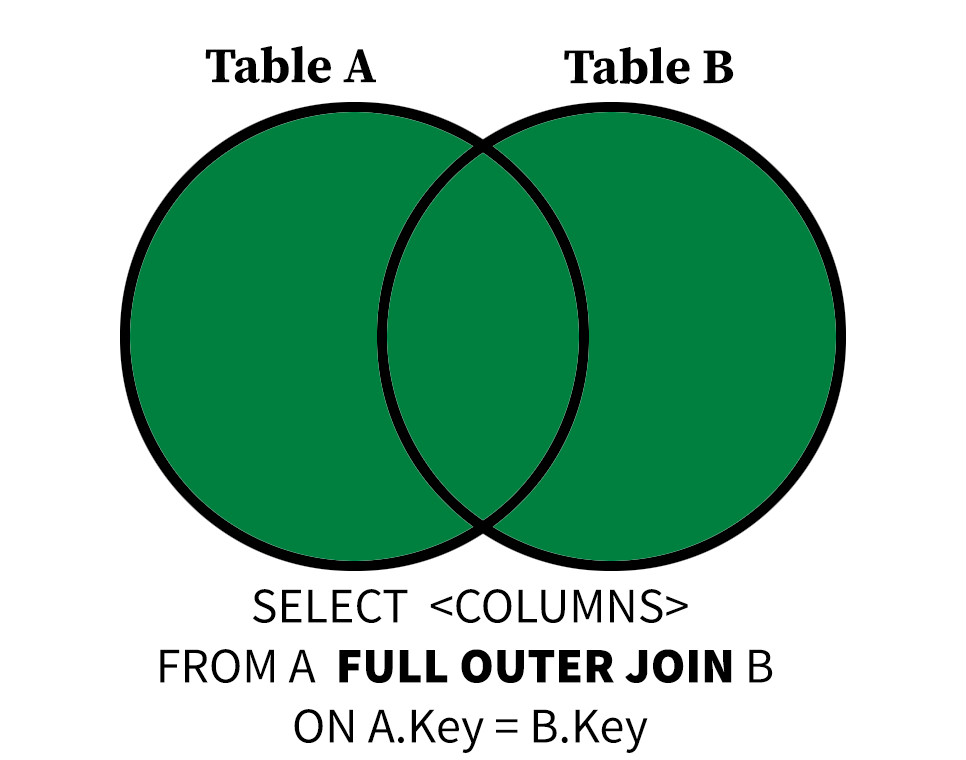
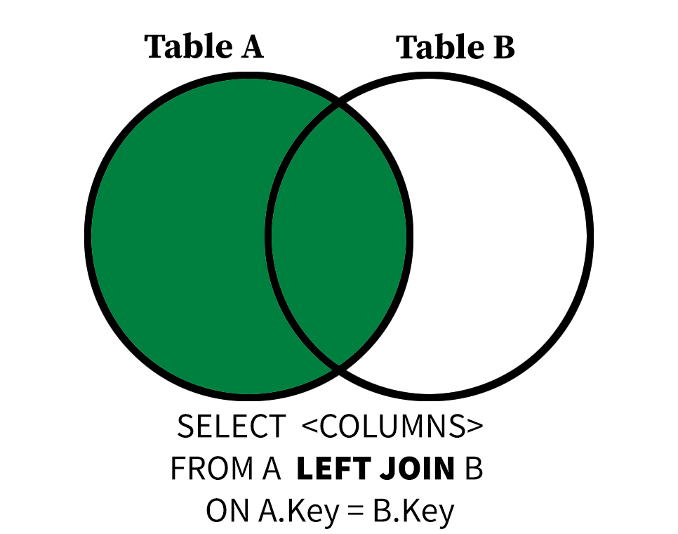
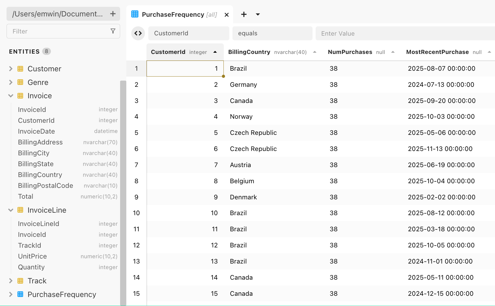

Using Joins
Using Other SQL Clauses with INNER JOIN

In our last lesson, you were introduced to the JOIN or INNER JOIN operation, which, given a match between columns expressed in TABLE1.col1, TABLE2.col2 form, allows you to create a new result with a row corresponding to each pair of matching rows between the two tables.
Joins are typically peformed between fields that are linked by a primary key/foreign key relationship. This allows us to ask complex questions about the same objects, people, or records by aggregating or concatenating information distributed across multiple tables.
When using SELECT * with joined tables, you will see every column in both tables, even when columns are repeated.
Null values are not considered equal to each other, so an INNER JOIN will not return rows where both A and B of ON A = B are null.
SELECT *
FROM Genre INNER JOIN Track
ON Track.GenreId = Genre.GenreId
LIMIT 5;| GenreId | Name | TrackId | AlbumId | Composer | Milliseconds | Bytes | UnitPrice |
|---|---|---|---|---|---|---|---|
| 1 | For Those About To Rock (We Salute You) | 1 | 1 | Angus Young, Malcolm Young, Brian Johnson | 343719 | 11170334 | 0.99 |
| 1 | Balls to the Wall | 2 | 2 | U. Dirkschneider, W. Hoffmann, H. Frank, P. Baltes, S. Kaufmann, G. Hoffmann | 342562 | 5510424 | 0.99 |
| 1 | Fast As a Shark | 3 | 3 | F. Baltes, S. Kaufman, U. Dirkscneider & W. Hoffman | 230619 | 3990994 | 0.99 |
| 1 | Restless and Wild | 4 | 3 | F. Baltes, R.A. Smith-Diesel, S. Kaufman, U. Dirkscneider & W. Hoffman | 252051 | 4331779 | 0.99 |
| 1 | Princess of the Dawn | 5 | 3 | Deaffy & R.A. Smith-Diesel | 375418 | 6290521 | 0.99 |
You can use SELECT followed by column names to restrict the results to specific columns, just as you would any other query.
SELECT TrackId, UnitPrice
FROM Genre INNER JOIN Track ON Track.GenreId = Genre.GenreId
LIMIT 5;| TrackId | UnitPrice |
|---|---|
| 1 | 0.99 |
| 2 | 0.99 |
| 3 | 0.99 |
| 4 | 0.99 |
| 5 | 0.99 |
However, if your joined tables have a column of the same name, you will be prompted to use table.col_name format in the SELECT clause.
SELECT Name
FROM Genre INNER JOIN Track
ON Track.GenreId = Genre.GenreId
LIMIT 5;ambiguous column: NameIn the example above, both Genre and Track have Name fields, but Name in the Genre table represents a genre, while Name in Track is the name of a song.
SELECT Track.Name, Genre.Name
FROM Genre INNER JOIN Track
ON Track.GenreId = Genre.GenreId
LIMIT 5;| Name | Name |
|---|---|
| For Those About To Rock (We Salute You) | Rock |
| Balls to the Wall | Rock |
| Fast As a Shark | Rock |
| Restless and Wild | Rock |
| Princess of the Dawn | Rock |
Using table.field notation makes the intent of the query clear to the SQL engine, but these results are no longer clearly to a human interpreter of the data: there are two different fields called Name.
SELECT Track.Name as Track, Genre.Name as Genre
FROM Genre INNER JOIN Track
ON Track.GenreId = Genre.GenreId
LIMIT 5;| Track | Genre |
|---|---|
| For Those About To Rock (We Salute You) | Rock |
| Balls to the Wall | Rock |
| Fast As a Shark | Rock |
| Restless and Wild | Rock |
| Princess of the Dawn | Rock |
Using AS aliases make the query results more human-readable. Use aliases liberally when performing joins and other complicated SQL queries.
When performing INNER JOIN operations, the number of rows in the result will be the same regardless of whether you join A to B or B to A, provided you use the same joining condition. This makes sense, given what we know about inner joins. If A=B, then B=A.
SELECT Track.Name AS Title, Genre.Name AS Genre
FROM Track INNER JOIN Genre
ON Track.GenreId = Genre.GenreId
LIMIT 5;| Title | Genre |
|---|---|
| For Those About To Rock (We Salute You) | Rock |
| Balls to the Wall | Rock |
| Fast As a Shark | Rock |
| Restless and Wild | Rock |
| Princess of the Dawn | Rock |
GROUP BY and Joins
We can use GROUP BY and HAVING clauses with joined tables. Just like with SELECT, using table.field form is the GROUP BY cluase is sometimes necessary to avoid ambiguity.
The following query computes the five most popular genres of Track in the database by joining the Genre and Track tables and counting the number of tracks per genre with COUNT. Then, these groups are sorted by the number of tracks per genre or NumTracks.
SELECT Genre.Name, COUNT(DISTINCT TrackId) as NumTracks
FROM Genre INNER JOIN Track
ON Track.GenreId = Genre.GenreId
GROUP BY Genre.Name
ORDER BY NumTracks DESC
LIMIT 5;| Name | NumTracks |
|---|---|
| Rock | 1297 |
| Latin | 579 |
| Metal | 374 |
| Alternative & Punk | 332 |
| Jazz | 130 |
Observe that Genre.Name is used in the GROUP BY clause rather than Name because both Genre and Track have a field named Name.
Quiz: JOIN and GROUP BY
Write a query that finds the CustomerId, FirstName and LastName of the 3 customers who spent the most money (sum of Total) by joining the Invoice and Customer tables on CustomerId.
SELECT Customer.CustomerId, FirstName, LastName, -----
FROM Customer INNER JOIN ----- ON ------ = ---------
GROUP BY Customer.CustomerId, FirstName, LastName
ORDER BY ------ ------
LIMIT 3;SELECT Customer.CustomerId, FirstName, LastName, SUM(Total)
FROM Customer INNER JOIN Invoice
ON Customer.CustomerId = Invoice.CustomerId
GROUP BY Customer.CustomerId, FirstName, LastName
ORDER BY SUM(Total) DESC
LIMIT 3;| CustomerId | FirstName | LastName | SUM(Total) |
|---|---|---|---|
| 6 | Helena | Holý | 49.62 |
| 26 | Richard | Cunningham | 47.62 |
| 57 | Luis | Rojas | 46.62 |
Joins Gone Wrong: Joining Against Arbitrary Fields
Just because two fields in two database tables share the same name doesn’t mean they are good candidates for joins. Foreign key relationships make for good joins because you can make guarantees about the shape and cardinality (the number of rows) in your results. Remember, primary keys correspond to at most one row in their respective tables.
What happens if we do an arbirtary many-to-many join? Let’s take UnitPrice as it appears in Track and UnitPrice as it appears in InvoiceLine. These both correspond to the price of a song or television episode from the Track table.
SELECT Track.Name, InvoiceLine.UnitPrice
FROM InvoiceLine INNER JOIN Track ON Track.UnitPrice = InvoiceLine.UnitPrice
ORDER BY Track.Name;This query produces an enormous result! Because many rows in Track have the same UnitPrice (0.99) and many rows in InvoiceLine have the same UnitPrice (0.99), it produces a table of size 7028053 rows.
Other Joins: FULL OUTER JOIN and LEFT JOIN
As stated above, INNER JOIN operations ignore tuples that have null values in the column used to join tables in either of the tables being joined. This isn’t always desirable, especially when the absence of a certain foreign key in a table is meaningful.

TheFULL OUTER JOIN operation includes input tuples “padded” with NULL values if either side of the join has unmatched tuples. This means every row in each of the tables in a FULL OUTER JOIN is included at least once in the output.
Let’s take the InvoiceLine and TrackId tables for example to see this difference. Each InvoiceLine has a non-null TrackId, but not every Track in the Track table has been purchased. How do we know?
This INNER JOIN has 2240 results, even though the Track table has 3503 rows. This is because any tracks that have one or more corresponding rows in the InvoiceLine do not appear in the results.
SELECT Track.TrackId, InvoiceLineId
FROM Track INNER JOIN InvoiceLine ON Track.TrackId = InvoiceLine.TrackId;If it was important that every track (and every invoice line) be included in the results, then we could use a FULL OUTER JOIN instead, which returns 3759 rows. This is because some tracks have been purchased twice, while others have never been purchased.
SELECT Track.TrackId, InvoiceLineId
FROM Track FULL OUTER JOIN InvoiceLine ON Track.TrackId = InvoiceLine.TrackId;We can then apply grouping to this join to learn more about the distribution of track purchases.
SELECT Track.TrackId, COUNT(DISTINCT InvoiceLineId) as NumPurchases
FROM Track FULL OUTER JOIN InvoiceLine ON Track.TrackId = InvoiceLine.TrackId
GROUP BY Track.TrackId;| TrackId | NumPurchases |
|---|---|
| 1 | 1 |
| 2 | 2 |
| 3 | 1 |
| 4 | 1 |
| 5 | 1 |
…
By restricting this query to groups (invoice lines grouped by track) with no known purchases with the having clause, we can see that 1519 tracks in the database have never been purchased.
SELECT Track.TrackId, COUNT(DISTINCT InvoiceLineId) as NumPurchases
FROM Track FULL OUTER JOIN InvoiceLine ON Track.TrackId = InvoiceLine.TrackId
GROUP BY Track.TrackId;| TrackId | NumPurchases |
|---|---|
| 7 | 0 |
| 11 | 0 |
| 17 | 0 |
| 18 | 0 |
| 22 | 0 |
…
Quiz: FULL OUTER JOIN vs. INNER JOIN
If we switch the FULL OUTER JOIN to an INNER JOIN in the query above, what will happen to our results.
LEFT JOIN Briefly Explained
The order in which you state A INNER JOIN B or A FULL OUTER JOIN B doesn’t matter, but that changes with the LEFT JOIN operation. The LEFT JOIN operation considers the first table the “left” side of the join and the second the “right” side.

The LEFT JOIN operation includes input tuples “padded” with NULL values on the “right” if any tuples on the left have no matches. This means every row in the table of the left side of a LEFT JOIN is included at least once in the output.
We can adjust our query above using a LEFT JOIN operator to find the purchase count for the first five tracks in the database in alphabetical order.
SELECT Track.TrackId, Track.Name, COUNT(DISTINCT InvoiceLineId) as NumPurchases
FROM Track LEFT JOIN InvoiceLine ON Track.TrackId = InvoiceLine.TrackId
GROUP BY Track.TrackId, Track.Name
ORDER BY Track.Name
LIMIT 5;| TrackId | Name | NumPurchases |
|---|---|---|
| 3027 | “40” | 0 |
| 2918 | “?” | 1 |
| 3412 | “Eine Kleine Nachtmusik” Serenade In G, K. 525: I. Allegro | 0 |
| 109 | #1 Zero | 0 |
| 3254 | #9 Dream | 1 |
A Note On Join Types
If every non-null value of A.key is present in B and vice-versa, then an INNER JOIN is equivalent to FULL OUTER JOIN and LEFT JOIN. Observe how the two queries below have the same number of results.
SELECT Invoice.InvoiceId, Invoice.CustomerId, InvoiceLine.InvoiceLineId
FROM Invoice FULL OUTER JOIN InvoiceLine
ON Invoice.InvoiceId = InvoiceLine.InvoiceId;SELECT Invoice.InvoiceId, Invoice.CustomerId, InvoiceLine.InvoiceLineId
FROM Invoice INNER JOIN InvoiceLine
ON Invoice.InvoiceId = InvoiceLine.InvoiceId;There is a RIGHT JOIN counterpart to LEFT JOIN, but it’s rarely used because RIGHT JOIN operations can always expressed as LEFT JOIN operations with the order of the tables inverted. In fact, early versions of SQLite didn’t even have a RIGHT JOIN keyword.
Joining Three or More Tables
You can join three or more tables in the same FROM clause, but you need to be careful to specify what you are joining on for each JOIN.
The following query joins three tables, Customer, Invoice, and InvoiceLine, groups the resulting joined rows by CustomerId, then aggregates to find the number of purchases and the most recent purchase of each customer.
SELECT Customer.CustomerId, COUNT(DISTINCT InvoiceLineId) as NumPurchases,
MAX(InvoiceDate) AS MostRecentPurchase
FROM Customer
INNER JOIN Invoice ON Customer.CustomerId = Invoice.CustomerId
INNER JOIN InvoiceLine ON Invoice.InvoiceId = InvoiceLine.InvoiceId
GROUP BY Customer.CustomerId
ORDER BY MostRecentPurchase DESC
LIMIT 5;| CustomerId | NumPurchases | MostRecentPurchase |
|---|---|---|
| 58 | 38 | 2025-12-22 00:00:00 |
| 44 | 38 | 2025-12-14 00:00:00 |
| 35 | 38 | 2025-12-09 00:00:00 |
| 29 | 38 | 2025-12-06 00:00:00 |
| 25 | 38 | 2025-12-05 00:00:00 |
Quiz: Big Joins
Some albums have many different composer credits! Find the ten albums in the database (and the musical artists responsible for them) with the greatest number of distinct composer attributions by joining the Artist, Album and Track tables. Remember, all the composer information varies on a Track by Track basis. INNER JOIN operations are appropriate here.
SELECT Album.AlbumId, Album.Title, Artist.Name, COUNT(DISTINCT -------) as NumComposerCredits
FROM Artist
INNER JOIN Album ON Album.ArtistId = Artist.ArtistId
INNER JOIN ----- on ------ = -------
GROUP BY -------
ORDER BY NumComposerCredits DESC
LIMIT 5;SELECT Album.AlbumId, Album.Title, Artist.Name, COUNT(DISTINCT Composer) as NumComposerCredits
FROM Artist
INNER JOIN Album ON Album.ArtistId = Artist.ArtistId
INNER JOIN Track on Track.AlbumId = Album.AlbumId
GROUP BY Album.AlbumId
ORDER BY NumComposerCredits DESC
LIMIT 5;| AlbumId | Title | Name | NumComposerCredits |
|---|---|---|---|
| 141 | Greatest Hits | Lenny Kravitz | 22 |
| 83 | My Way: The Best Of Frank Sinatra [Disc 1] | Frank Sinatra | 21 |
| 248 | Ao Vivo [IMPORT] | Zeca Pagodinho | 19 |
| 115 | Sex Machine | James Brown | 16 |
| 33 | Chill: Brazil (Disc 1) | Marcos Valle | 16 |
Saving Complex Queries as Views
You’re now writing complex queries that would take you time to rewrite. Joining three or more tables can be painstaking, and it’s not uncommon to run the same report on a regular basis.
A VIEW is a (virtual) table that is populated every time you query it. Any SQL query can be made into a VIEW, but the feature is typically used for complex queries or analyses.
CREATE VIEW BigPurchases AS
SELECT Customer.CustomerId, Invoice.BillingCountry, COUNT(DISTINCT TrackID) as NumPurchases,
MAX(InvoiceDate) AS MostRecentPurchase
FROM Customer
INNER JOIN Invoice ON Customer.CustomerId = Invoice.CustomerId
INNER JOIN InvoiceLine ON Invoice.InvoiceId = InvoiceLine.InvoiceLineId
GROUP BY Customer.CustomerId, Invoice.BillingCountry
ORDER BY MostRecentPurchase DESC;
Click on the left Entities to see your new view in Beekeeper Studio. This view is saved to your database, so it is available to you each time you open Beekeeper Studio.
To remove a view, right-click the view and click Drop.
Closing Note
Thank you so much for participating in this workshop series! If you would like to learn more, I would encourage you to continue your SQL journey by looking through our recommended additional resources.